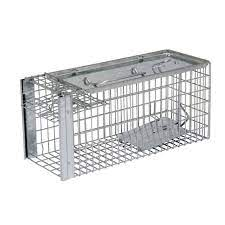
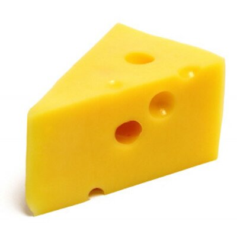
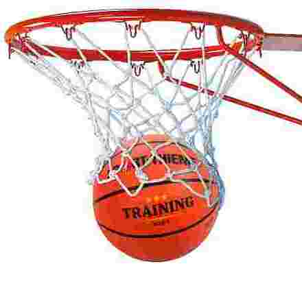

Pick-N-Roll vs Screen Role
Pick-N-Roll vs Screen Role are two ways of achieving 2-on-1 situations. Though similar in principle, execution is completely different. There are 4 stages in achieving a successful move. Screen-roll is a more natural progression of movement and easier for players to understand and execute. Both Shooter and Pick have to play their role to make it success.
What is the difference
Difference is in the player movement, and distances involved. In a Screen-roll, Shooter moves ahead/away from defender coming to block. In Pick-N-Roll, Shooter moves in the direction of the PICK, depending which side of the defender the pick is set.
Screen Roll
Shooter positions behind Pick far enough away to ensure Defender jumping will pass the Pick. Shooter prepares to take shot. Defender moves out to stop the shot. Shooter moves ahead of defender, blocking the defender Point Guard/Pick ensures defender cannot return to position and moves in opposite direction. This is very natural movement and easier to pull off. In this scenario, Shooter is often closer to Pick and gap not wide enough for defender to get through.
Advantages of Screen-Roll
- Shooter positions behind the screen, increasing chance of making shot
- Shooter is protected behind screen.
- Natural for Shooter to move away from Defender
- Easier and natural for pick to block Defender
- Less space for Defender to escape or outmanoeuvre
Both above techniques are setting up a trap for defender. There are 4 stages in preparing and executing this move.
- Plan and Prepare
- Set up
- Trigger
- Finish/Basket
1. Plan and prepare

This stage starts as soon as Shooter/Pick turn towards basket. There are many ways to do it based on scenarios. Few considerations are
- Analyse positions of opposition players
- Look for opportunity to pick a player out if possible.
- Identify which defender likely to jump
- Try to create mismatch
2. Set up

At this stage you have pick in position, and shooter positions to receive ball.
Pick
- Ideally pick a position near 45 mark
- Commit to single defender leaving space for other defender to move out
- Taller/higher pointer player more likely to jump and is best.
- Hold position slightly pointing towards next move
Shooter
- Read Pick position to decide where to setup
- Position behind pick at safe distance to receive ball.
- Ensure gap not wide enough or close gap before defender reaches.
- Ensure you are perfectly position to take shot where you have higher percentage success.
- Keep eye on Basket and Dont look at defender
3. Trigger
Timing is a key factor to trigger. Must wait for defender to move out.

- If defender does not jump, take your shot
- If defender jumps, wait till he/she clear yout pick
- Move away from defender, not leaving gap for defender to come through
- Pick moves in opposit directoion creating gap, ensuring defender not able to enter key
4. Finish/Basket
2-1 situation created with 1 defender behind Shooter or Pick
- Ensure Gap between Shooter and Pick
- Person with Ball keep eye on other player as well as player on top while moving in
- Shooter in key and no defender, take shot
- Shooter in key and defender mismatch, take shot
- Shooter defended and Pick is free, pass to pick
- Shooter defended, Pick defended by middle player, pass ball to Top for shot. (3-on-2)
Options / variations
Defenders saying put
This is most likely due to one of the following
- Defenders dont believe Shooter will take a shot
- Defenders think shooter has less chance of making shot
- Shooter not posing a threat
- Simle as not trained to jump
In this kind of scenarios, there are multiple options
- Take shot behind screen, as clost to basket as possible
- Reposition up or down and prepate to take shot
- Move up or down to create gap between defenders, enabling a pick
- If height advandtage take shot over that Defender
- Work with Ball Handler and pick for him/her
Defender jumps and return or goes around.
Fake a shot, if defender goes back, take shot (ideally close gap and take shot).
Defender too strong/dominent
Let the Pick block that Defender, and take screenshots